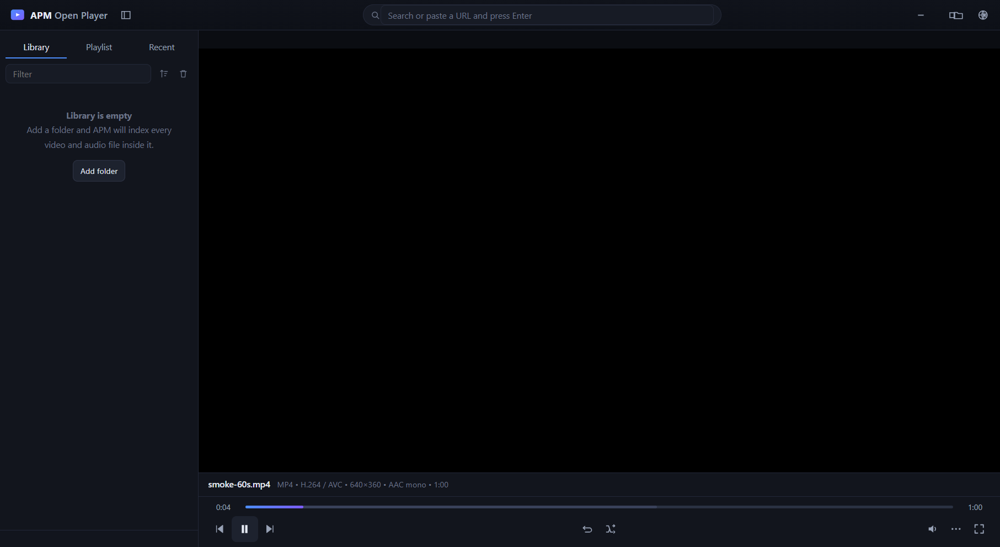

AM Player — short name AMP Open Player
A universal media player for Android, Windows and macOS from one codebase. Built on libmpv and libVLC/FFmpeg — the two most complete open media stacks that exist. No file will ever be one of the “unsupported” ones.
Every build is a separate download — you take the one that matches your machine and nothing else. No account, no installer bundle, no picking a platform out of a 500 MB archive.
brew install mpv first
Win + Pause and look at
“System type”. It says x64-based PC for a 64-bit machine and
x86-based PC for 32-bit. Not sure? Take the 64-bit one — it runs
on both, and it is the build the decode suite is verified against.
The test suite loads the exact engine binary that ships, asks it what it can decode, and counts the answer. 1580 decoders and 78 protocols — no feature list, no guesswork.
Previous, play, next, and the two or three that earn their place. Everything else — tracks, subtitles, speed, snapshot, conversion — is one tap away.

No account, no subscription, no “pro” tier. The whole thing ships in one file.
MP4, MKV, WEBM, AVI, MOV, QT, WMV, ASF, FLV, TS, M2TS, VOB, OGV, 3GP, MPG, RM, RMVB, DIVX, MXF, DV, SWF, AMV, Y4M and hundreds more.
E-AC3 and AC-3, Blu-ray TrueHD and MLP, DTS — the formats most phones refuse. FLAC, ALAC, APE, WavPack and TTA alongside Opus, Vorbis, AAC and MP3.
SRT, ASS/SSA, SUB and the rest, with burn-in and automatic timestamp repair for files that report the wrong offset.
Float the video over anything else on Android, and keep playing while the notification shade is open via a foreground service.
RTSP, RTMP, UDP, SRT and MMS among 78 protocols. Open a network stream as if it were a local file.
Convert between containers and codecs, with hardware acceleration used wherever the machine offers it.
Playlists, favourites, a searchable library and shuffle. Your files never leave the device.
VLC-style shortcuts on desktop. Change speed, seek, cycle tracks and switch windows without touching the mouse.
The verification report is written by running the code in this repository. Where something is unproven, it says so instead of hoping you do not notice.
The full report, including what to check first on real hardware, is in docs/VERIFICATION.md.
No. The player itself has no limit. Resolution is bounded only by what your hardware can decode, and hardware decoding is on by default.
No account, ever. Once installed it plays from local storage with no network dependency. Nothing you open is uploaded anywhere.
Unzip, drag the .app into Applications. Before the first run,
install mpv with brew install mpv. If Gatekeeper complains,
right-click the app and choose Open.
Copy it to the phone and tap it, allowing “Install anyway” when Android asks. It is ARM only and needs Android 5.0 or newer.
They are not code-signed, so SmartScreen cannot verify the publisher and warns the first time. Click More info → Run anyway. The same reason applies to the macOS bundles on first launch.
Yes. Grab the source archive or clone the repository, then follow
docs/BUILDING.md. The whole pipeline runs from GitHub Actions
and produces every build listed on this page.
One download, no codec left behind. Pick your platform and press play.